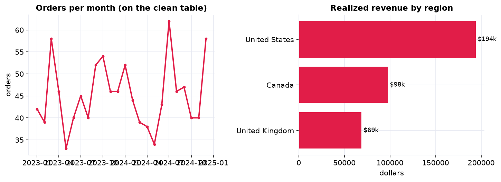
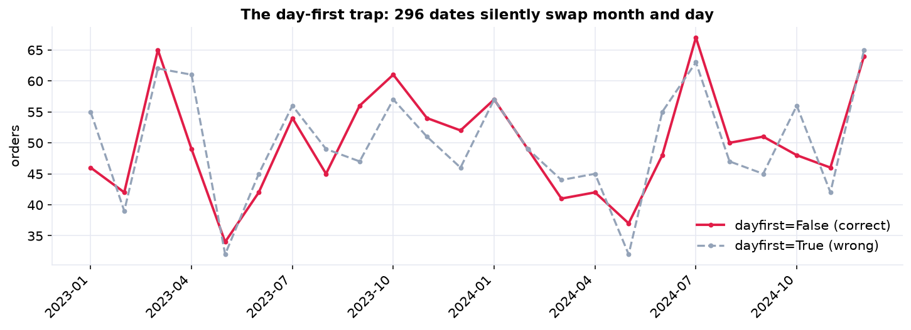

Every earlier chapter began with a tidy dataframe. This one is about how you earn that dataframe. Real data arrives split across separate exports and riddled with the small inconsistencies that silently corrupt results: the same country spelled four ways, a date that could be March or April, a price stored as the text "$1,299.00", rows duplicated by an export bug. The work of joining and cleaning those files deserves the same rigor as any model, because a mistake here quietly poisons every number downstream.
It is the exploratory-data-analysis groundwork the whole book stands on: a realistic multi-file merge, disciplined date and type parsing, duplicate and orphan detection, a validation checklist, and honest handling of the missing data that a clean join reveals.
The Problem, and the Three Files (Steps 1–2)
The business question is simple, how is revenue trending and who returns the most, but the data lives in three
separate exports that must be joined first: an orders file, a customers file, and
a returns file. Each has its own quirks, and they link on a shared customer_id and
order_id that do not quite match out of the box.
orders (mixed date formats, currency as text, duplicate rows, missing amounts, a few orphan customer ids), customers (id casing and whitespace, four spellings per country, duplicate rows, some missing regions), and returns (its own date format). The notebook turns all three into one clean table.
The Mess, One Class at a Time (Steps 3–8)
Good cleaning is methodical: fix one kind of problem at a time, in the right order. We normalize the many spellings
of missing ("", N/A, null, -) into a single
NaN; clean the join key on both tables (strip whitespace, uppercase) so it will match;
drop duplicate rows (40 orders and 15 customers); parse each date column with its
own format; turn currency text into numbers (37 orders turn out to have no amount); and
standardize the categories so four spellings of one country collapse to one.
Join, and Validate (Steps 9–10)
Now the tables can be joined. A left join on the cleaned customer_id attaches each
order's region, and indicator=True reveals 8 orphan orders whose id matches no
customer, a data-quality issue to report, not hide. Cleaning the key first is what makes this work: joined on the
raw keys, about a quarter of orders would have silently failed to match. A second join flags returns.
Then we validate before trusting anything: assert the order ids are unique, the dates fall in range, amounts are non-negative, exactly three regions remain, and surface what is still imperfect (the 37 missing amounts, the 8 orphans). Cheap assertions here catch the errors that would otherwise silently reach a dashboard.
The Payoff: Trustworthy EDA (Step 11)
Only now, on a table we trust, do the answers appear, and every one of them would have been wrong on the raw files: inflated by duplicates, scattered by region spellings, or crashed by text amounts. Realized revenue is about 388,000 dollars at a 13.8% return rate, with the United States the largest market (roughly 194,000 dollars, about half the total) and a steady monthly order flow.

The business answers, finally trustworthy: a steady monthly order flow (left) and realized revenue by region (right), led by the United States at about 194,000 dollars, roughly half the total.
The Silent Date Trap, and the Memo (Step 12 & beyond)
One cleaning bug deserves special fear: the mis-parsed date. Order dates like 03/04/2024 are ambiguous,
March 4th or April 3rd, and guessing wrong produces no error at all, just a wrong answer. On this
data, parsing day-first instead of month-first leaves close to 300 dates silently swapped into the
wrong month, quietly distorting the monthly trend even though the raw text never changed. The defense is to never
let the parser guess: set the convention explicitly, coerce failures, and sanity-check the result.

The same date column, two parse rules, two different histories. Nothing errors out, but close to 300 dates silently swap month and day, and the monthly curves diverge. A date bug produces no error message, only wrong answers.
Memo to the analytics team
After consolidating the three exports into one clean table (1,200 unique orders across 300 customers), realized revenue was about 388,000 dollars at a 13.8% return rate, led by the United States.
Two data-quality issues to fix at the source
37 orders exported with no amount (so revenue is a slight under-count, the plausible range is about 388,000 to 399,000 dollars), and 8 orders reference customers missing from the customer file.
The repeatable checklist
(1) normalize missing-value sentinels, (2) clean and standardize join keys on every table, (3) drop duplicate rows, (4) parse each date with its own explicit format, (5) convert currency and numeric text to numbers, (6) standardize text categories, (7) join with an indicator to catch orphans, and (8) assert structural checks before trusting any total.
Do the whole clean-up in Python
The companion notebook is the full 12-step wrangling workflow: it loads the three messy files, normalizes missing-value sentinels, cleans the join keys, drops duplicates, parses three date formats and the currency amounts, standardizes the region and status categories, joins everything with an indicator to catch orphans, runs a validation checklist, and only then explores the clean data, all library-first with pandas.
View opens the rendered notebook instantly.
Open in Colab runs it live. To run locally, install numpy, pandas,
matplotlib, and openpyxl.
🎓 Key Takeaways
- ✓Cleaning is the job: turning three messy files into one trustworthy table is where analyses are won or lost.
- ✓Normalize keys before joining: on the raw keys about a quarter of orders silently failed to match; cleaning cut orphans to 8.
- ✓Parse dates and numbers explicitly: a wrong date assumption swapped close to 300 dates with no error at all.
- ✓Deduplicate before you aggregate: 40 duplicate orders would have inflated every revenue total.
- ✓Validate, and be honest about gaps: assert your assumptions, and report the range the 37 missing amounts imply (about 388k to 399k dollars).
Take It Further
Five deeper cuts at data cleaning in the companion notebook:
The day-first date trap
Parse the dates both ways and count how many silently swap month and day.
dayfirst=False and dayfirst=True, always with errors='coerce'.Clean the key, or lose the join
Join on the raw keys versus the cleaned keys and measure how many matches a dirty key silently drops.
Validate the merge with a contract
Use validate="m:1" so a bad key relationship raises an error instead of a quiet bug.
Wrap it in a reusable pipeline
Fold every step into one clean() function with assertions, a data contract for next month's export.
assert checks on ids, dates, amounts, and statuses.How much do the gaps move revenue?
Bracket the headline by excluding versus imputing the missing amounts.
All five, worked in a companion notebook
A second notebook, Take It Further, rebuilds the Chapter 141 clean-up and works every extension with visuals and explanations: the day-first date trap, the cost of a dirty join key, a merge validated by a data contract, a reusable asserting pipeline, and a revenue-sensitivity analysis of the missing amounts.
Quiz: Test Yourself
Eight questions on the wrangling workflow, from missing-value sentinels to validating a join. Answer them, hit Check Answers, and keep refining until you score 100%. Your progress is saved.
That wraps up our exploratory case studies. Next the book turns to probability, the language of uncertainty. Probability Fundamentals opens Part VI with sample spaces, events, and the rules that govern chance, the foundation everything downstream is built on.